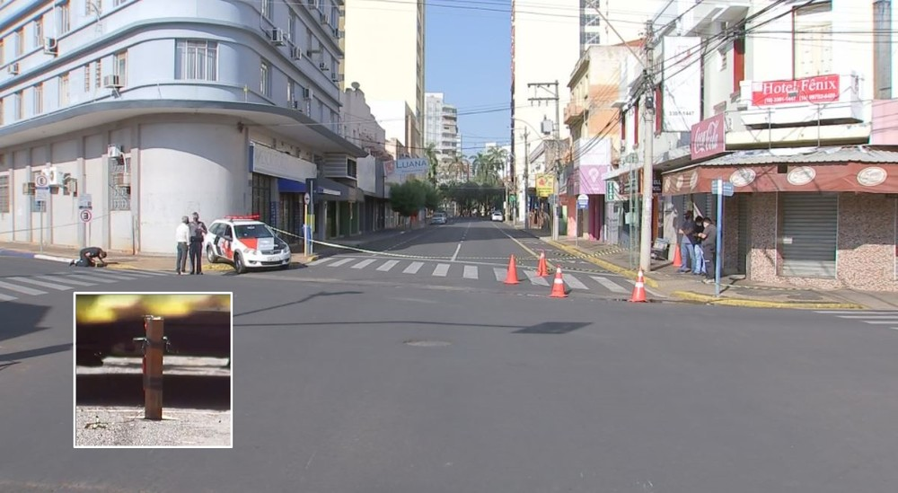

Explosivos deixados em ruas fazem Araçatuba parar após mega-assalto
Criminosos fortemente armados invadiram a cidade e fizeram moradores reféns na madrugada desta segunda-feira (30). Dois moradores e um bandido morreram baleados.

Centro de Araçatuba (SP) amanheceu vazio nesta segunda-feira (30) — Foto: Reprodução/TV TEM
O mega-assalto a agências bancárias de Araçatuba que terminou com três mortos, três detidos e cinco feridos na madrugada desta segunda-feira (30) mudou a rotina da cidade. Lojas, empresas, escritórios e escolas estão fechados pela ameaça de explosões de artefatos que a quadrilha espalhou pela cidade.
Ruas do Centro de Araçatuba (SP) foram interditadas após ataque de criminosos — Foto: Reprodução/TV TEM
Várias ruas foram interditadas para evitar a circulação de pessoas, já que os artefatos estão equipados com sensores de proximidade, segundo a polícia.
Em um vídeo feito por uma câmera de segurança é possível ver um dos criminosos espalhando explosivo. No vídeo (veja abaixo) é possível ver que o artefato emite luzes de raio laser verde.